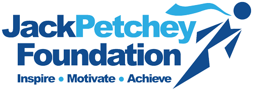
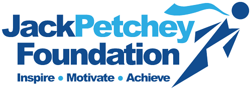

Award List
2016: PIXL Award – Award given to the most talented students who overcome an educational barrier.
2017: Jack Petchey award – Award given to pupils who work harder and are granted £300 to spend on Educational Resources.
2018: UCL We Solve Problems – University College London chose a team to compete regionally and solve mathematical problems.
2018: UKMT GOLD – This award was only given to the top 6% of the country.
2018: UKMT Regional Team selection – My formative school chose a team to represent them in the borough math tournament.
2019: Prefect – I was given this role as I could help the younger generation transition to the next stage in their academic life.
2019: Army Cadet – This position enabled me to develop my superintendence skills.
2020: Youth Health Champion – The school board chose me to represent our school in Walthamstow Town Hall.
2021: Headboy – This was an election in which I had to use my persuasive skills to gain vot 0es from my school.
2022: Dojo Real Work Winners – Our team won the top award as our website was recognised for having the most professional features.
 
